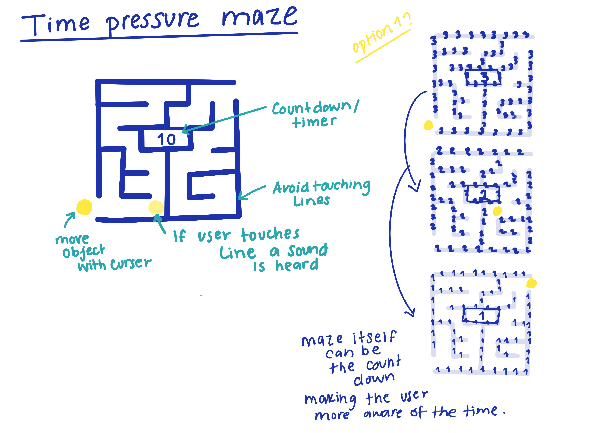

Decoding Aesthetic Cultures
Pac-Man Aesethic
Pac-Man is an iconic maze chase arcade game that was developed by the Japanese arcade manufacturer Namco Limited in 1980. Although this game was developed in 1980 it is still widely played and is a staple game in every arcade. For project 1 I choose to look into the aesthetic of Pac-man and explore it’s visual and dynamic elements. Pac-Man is known for its very simple and geometric look, the game consists of mainly lines and dots placed in a enclosed structure. The game is also known for it’s dark and glowing visual style as well as its bright characters. Because Pac-Man was developed in 1980 the visuals of the game look very pixelated and the movements of the characters are not smooth, over the years Pac-Man did not change this and it has become part of the visual and dynamic elements of the game. I choose the Pac-Man aesthetic as I enjoy creating something interesting from very simple geometric shapes and patters and the game Pac-Man does just that successfully. Although many games from the era of Pac-man are simple, It is easy to distinguish what visual elements belong to the Pac-Man aesthetic as it remained the same over the years and has very specific colors, patters and characters.


For project 1, I decided to look into the emergent media topic of software clocks. After learning about John Maeda’s artwork “Maeda’s 12 o’clocks” in class, It really sparked my interest in clocks and the idea of time. It is an interesting to think how one invention can change so drastically over the years. Clocks are an invention that dates back to the 14th century and have evolved over thousands of years, each era and civilization had their own way of telling time using different objects, from sundials to tower clocks and even stone clocks, this is one invention that has been an essential part of human civilization and continues to advance and change as years go by. Moving into a very digital era it is no surprise that the clocks that we use now are mainly clocks that are in computers, smart phones and smart watches, but it is important to understand how these clocks work and how smart devices like computers can keep track of time even when the devices are switched off. computers have something called a real time clock which runs whether the computer is switched on or off. most real time clocks use something called crystal oscillator that create signals with precise frequencies which is also the same method used for wrist watches. Because of this process, computers are able to tell time and creating software clocks like in John Maeda’s artwork becomes easier. When using softwares like javascript you are able to get the time that is on your computer to make a clock on your own, and this way designers can create thousands of different clocks that are not typical to the clocks we see physically in our day to day lives. Because of the softwares and technologies we have nowadays we are able to visualize time in ways that has never been done before. Time can be visualized in many different ways such as stopwatches, timers and countdowns. Using the aesthetic that I choose for project 1, I want to incorporate some of the visual and dynamic elements of pac man to represent time in my own way. Time is something that is running out, it is constantly moving and people’s behavior change when they know they are being timed or know time is running out. Using the enclosed maze like structure of pac man, I want to create a maze that people can to go through using their mouse without touching the sides of the maze in a specific time, I will use a countdown to visualize time running out and encourage people to finish the maze in time. The reason for this is because i want to visualize how time pressure can make some people loose focus, panic and not finish a task while others who remain calm may be able to handle time pressure better and be able to accomplish tasks more easily.
sketches 